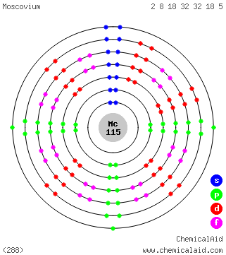

|
|
||
|
Moscovio Es un elemento extremadamente radiactivo, su isótopo conocido más estable tiene un período de semidesintegración de poco más de 1 minuto. El moscovio es un metal del bloque p que se estima que presenta propiedades similares a sus homólogos: nitrógeno, fósforo, arsénico, antimonio y bismuto. También se prevé que sea similar al talio, con un solo electrón suelto fuera de una corteza semicerrada. |
 |
DATOS Número Atómico: 115 Peso Atómico: 289 Electronegatividad: - Configuración Electrónica: [Rn]5f146d107s27p3 Estados de Oxidación: N/A No. de Electrones de Valencia: N/A |